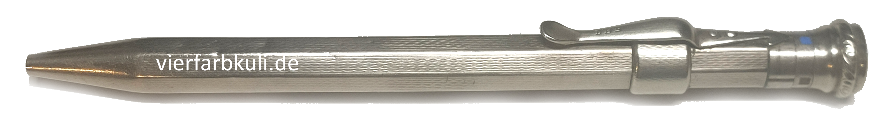
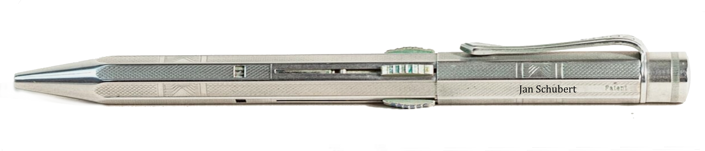
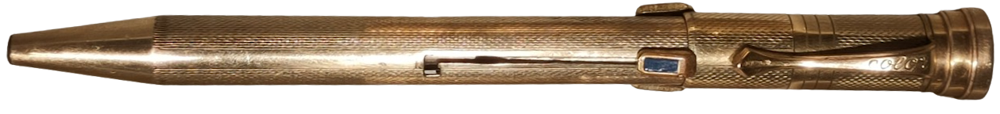
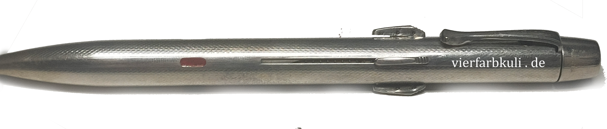
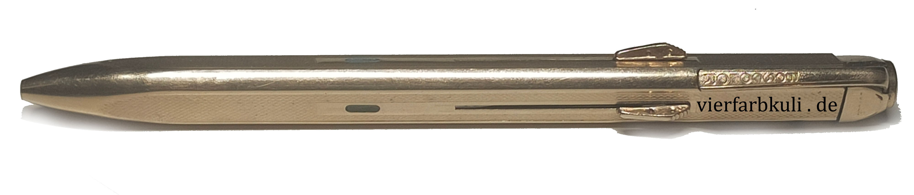
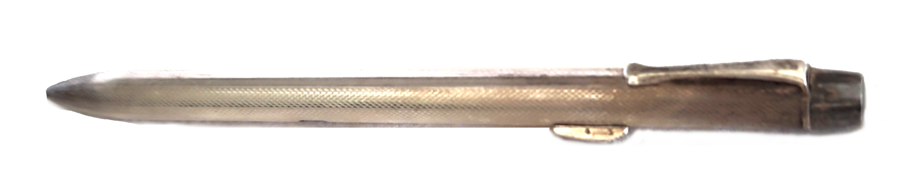
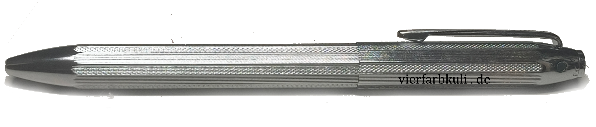
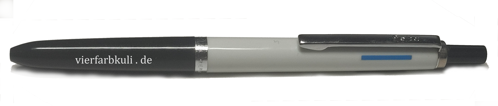
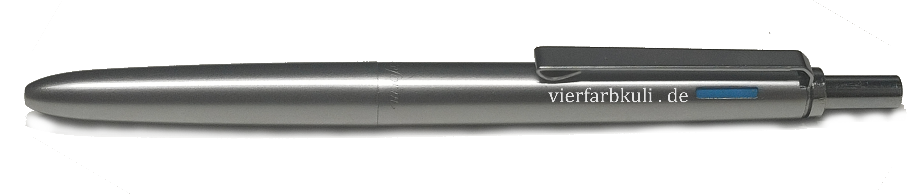
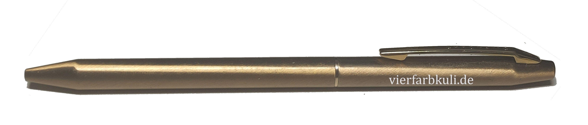

Montblanc Vierfarbstifte
Vintage Montblanc-Mehrfarbstifte und deren Äquivalente
Stand: 27.04.2026
Montblanc stellte keine Mehrfarbstifte selbst her, sondern beauftragte verschiedene Hersteller.
Hier finden Sie erstmalig die Auflistung aller Alternativmodelle und Hersteller dieser sog. White-Label-Produkte.
Es sind pro Modell mehrere optische Variationen möglich, diese werden nicht aufgelistet.

| Originalhersteller: | Gebrüder Fend |
|---|---|
| Produktname: | ? |
| Herstellungsland: | Deutschland |
| Zeitraum: | 1929-? |
| Entspricht Montblanc-Nummer: | ? |
| Bemerkung: | Ist nicht als Fend markiert. Bilder von diesem und ein paar weiteren finden Sie auf der externen Webseite Collectibe Stars. |

| Originalhersteller: | Gebrüder Fend |
|---|---|
| Produktname: | Norma |
| Herstellungsland: | Deutschland |
| Zeitraum: | 1933-? |
| Entspricht Montblanc-Nummer: | ? |
| Bemerkung: | Der Fend Norma spielte eine große Rolle für die Firma Gebrüder Fend. |

| Originalhersteller: | Bossert&Erhard |
|---|---|
| Produktname: | Color |
| Herstellungsland: | Deutschland |
| Zeitraum: | 1935-? |
| Entspricht Montblanc-Nummer: | ? |
| Bemerkung: | Der Color war für Bossert&Erhard ein großer Erfolg. Modern nennt man diesen Mechanismus "bolt action". |

| Originalhersteller: | Bossert&Erhard |
|---|---|
| Produktname: | Boscolor |
| Herstellungsland: | Deutschland |
| Zeitraum: | 1955 - 1976 |
| Entspricht Montblanc-Nummer: | Kugelschreiber: 5, 50, 51, 52, 53, 54 Buntstifte: 60, 61, 62, 63, 64 |
| Bemerkung: | Zwei Versionen von Mechanismus. Ich nenne sie automatisch und halbautomatisch. Automatisch bezieht sich auf die Sperrhülse von Fend, die bei Betätigung eines anderen
Schiebers den vorgeschobenen Schieber automatisch wieder zurückzieht. So funktionieren auch die anderen Schieberstifte unter Montblanc. Der halbautomatische Mechanismus folgte, anders als von manchen Sammlern behauptet, erst später. Bei diesem schob man einen anderen Schieber hoch zum Rückzug des Vorgeschobenen. Ob die Halbautomatik auch bei einem Montblanc-Stift existiert, weiß ich nicht. Deshalb fasse ich alle Nummern hier zusammen. |

| Originalhersteller: | Bossert&Erhard |
|---|---|
| Produktname: | Boscolor |
| Herstellungsland: | Deutschland |
| Zeitraum: | 1959-1968 |
| Entspricht Montblanc-Nummer: | 55, 56, 57 |
| Bemerkung: | Wohlmöglich der einzige dreiseitige Dreifarbstift seit damals. Ungewöhnliche Form. |

| Originalhersteller: | Bossert&Erhard |
|---|---|
| Produktname: | Boscolor |
| Herstellungsland: | Deutschland |
| Zeitraum: | 1960-1968 |
| Entspricht Montblanc-Nummer: | 65, 66, 67 |
| Bemerkung: | Nur 2 Farben, Schieber nicht radialsymmetrisch angeordnet. |

| Originalhersteller: | Bossert&Erhard |
|---|---|
| Produktname: | Boscolor |
| Herstellungsland: | Deutschland |
| Zeitraum: | 1961-1977 |
| Entspricht Montblanc-Nummer: | Pix-o-mat: 58, 100-108 |
| Bemerkung: | Alle Kappendrücker sind gleich aufgebaut. Er stammt nicht von Fend, welche einen sehr ähnlich aussehnden Stift hergestellt haben, welcher diesem hier vorzuziehen ist. Der ähnlich aussehende Kugelschreiber "Ceria", der auch für Rotring hergestellt wurde, ist ebenfalls nicht identisch mit diesem Stift. Ausschließlich der Montblanc Pix-o-mat und der Boscolor weisen diesen Mechanismus auf. |

| Originalhersteller: | Mutschler (für Geha) |
|---|---|
| Produktname: | Geha C4L |
| Herstellungsland: | Deutschland |
| Zeitraum: | 1971-1980 |
| Entspricht Montblanc-Nummer: | Carrera: 570, 570ms, 572 |
| Bemerkung: | Der günstigste und praktikabelste Vierfarbstift der Montblanc-Mehrfarbstifte. Auch heute noch gut nutzbar und auf beeindruckende Weise perfektioniert. |

| Originalhersteller: | Mutschler (unter Reform) |
|---|---|
| Produktname: | / |
| Herstellungsland: | Deutschland |
| Zeitraum: | 1971-1975 |
| Entspricht Montblanc-Nummer: | 672 |
| Bemerkung: | Nutzt C4L-Mechanismus, doch Aufbau abseits davon leicht anders, um mit Metallhülse zu funktionieren. |

| Originalhersteller: | Chromatic Corporation |
|---|---|
| Produktname: | Chromatic |
| Herstellungsland: | USA |
| Zeitraum: | 1975-1977 |
| Entspricht Montblanc-Nummer: | 70, 71, 72, 73, 80, 82, 83 |
| Bemerkung: | Noch vor dem Zebra Sharbo (1977) wurde der Chromatic 1963 in den USA erfunden und zu dieser Zeit hergestellt. Bis in die 1990er Jahre war er
in unzähligen Variationen beliebt bei Kugelschreibersammlern. Der Name Chromatic wurde auch für einfarbige Kugelschreiber als auch eine später erschienene Kombination aus
Kugelschreiber und Druckbleistift genutzt. Letztere war wohl eine Reaktion auf die Einführung des Zebra Sharbo. Die Montblanc-Mehrfarbstifte der Chromatic Corporation sind alle Zweifarbkugelschreiber. |